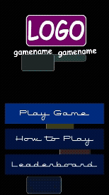

About Me
I've had a passion for computers, mathematics, puzzles, and the sciences ever since I was a kid. Throughout my life, these passions have only grown; I have found great interest and ease in the STEM courses I've taken, with my favorite middle and high school courses centering topics such as electronics, coding, calculus, and physics. Throughout university, I furthered my interests into web design, game development, and education. Now that I've graduated, I am eager to create, applying my quick learning and educational skills into concrete web, software, and game development projects to teach and help my community.
Education
I received my Bachelor's of Science in Computer Science from the University of Arizona just last December (2025). I graduated with summa cum laude distinction (3.95 GPA) and a minor in Statistics and Data Science. Here, I learned about the foundational principles of computer science through coursework on data structures, object-oriented programming, design patterns, theory, and more. I also took courses which explored topics such as data science/engineering, machine learning, compilers, and the video game insdustry.
Work Experience
During my last semester, I worked at Cloud Microphones in Tucson, tackling two unique projects as a part of their marketing team. My initial work involved creating a Shopify-based website in a team of 3, prioritizing e-commerce, usability, and design. In many instances, I had to bypass the limits of the Shopify editor, directly adding Liquid, HTML, JavaScript, and CSS code to the site to fine-tune and create webpage sections and components.

After the website was done, I helped prepare for the NAMM trade show by independently creating a standalone arcade-style game fully in C using the Simple DirectMedia Layer (SDL) library to promote products. This game was controlled using USB-encoded joystick input and deployed entirely on a Raspberry Pi.
I also spent five semesters as an Undergraduate Teaching Assistant for University of Arizona's Department of Computer Science. I TA'd for three courses: Intro to Discrete Mathematics, Analysis of Discrete Structures, and Systems Programming / Unix. In this role, I worked with several other TAs to provide helpful support to students during class, scheduled weekly office hours, supplemental instruction, and review sessions. I would grade assignments (sometimes using custom bash grading scripts), review exam content, and answer student questions, among other duties.
Research
I took part in one graph-theoretical undergraduate research project during my time at UA, collaborating with three professors, one PhD student, and another undergraduate student. This project is titled "Size Should not Matter: Scale-Invariant Stress Metrics," and it focuses on consistency issues with popular quality metrics on graph networks. Throughout this experience, I was directly exposed to the academic research process; I drafted academic writing, ran empirical tests on a suite of 2000+ graphs, and created tables and scatterplots based on the empirical data. I used Python libraries such as NumPy, pandas, MatPlotLib, and NetworkX to explore and analyze the data.
Professional Interests
In general, I believe I am a design-oriented person; I appreciate efficiency and usability, and I have a good intuition when it comes to modifying small parts of a system to improve the whole. I think that this translated directly into my passion for web development/design. I hope you agree with me that this website is aesthetically pleasing, and I find a lot of enjoyment using the building blocks of HTML, CSS, and JavaScript to create components from scratch. My work at Cloud Microphones was a great way for me to explore my practical design skills, and my Data Visualization course with Joshua Levine allowed me to hone my skills with D3.js, creating a suite of satisfying visualizations.
I also have an interest in education; my mother has been a teacher for 20+ years, and I have realized, through her experiences along with my own as an Undergraduate TA and tutoring my friends, that I find teaching others foundational and advanced computer science and technical thinking skills comes naturally to me. I find myself passionate about game development as well; coding a 2D marketing game in C allowed me to explore this interest, and I intend to pursue this passion further with personal projects which I plan to share on this website!